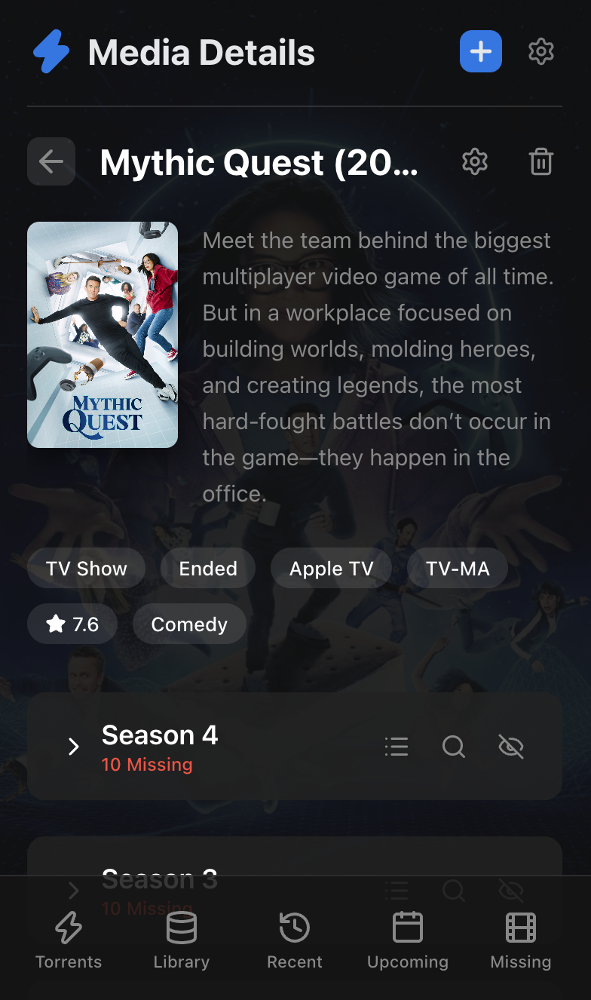
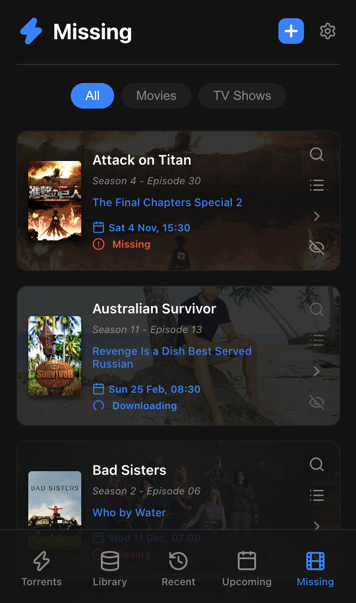
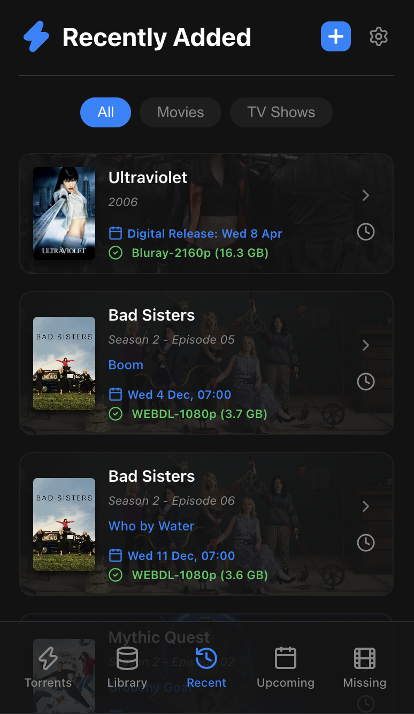
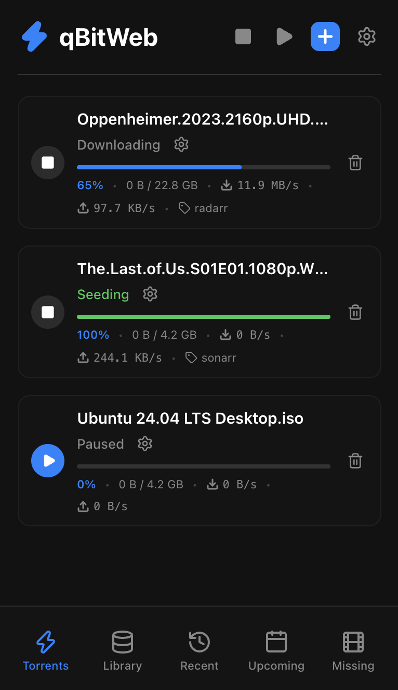
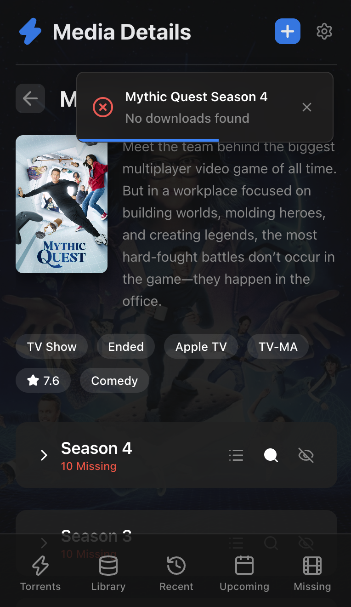

The modern interface for
your media servers.
A beautiful, unified dashboard to manage qBittorrent, Sonarr, and Radarr. Mobile optimized, lightning fast, and incredibly easy to self-host.

Everything you need, in one place.
Stop jumping between tabs. qBitWeb brings your entire media ecosystem together.
Interactive Search & Queue
Search for specific episodes or movies directly from the app. Instantly trigger downloads, view releases, and watch the real-time download progress right from the media card without ever opening qBittorrent.

Unified Library
View your entire Radarr movie collection and Sonarr TV shows in a single, beautiful Netflix-style grid. Quickly see what's missing, what's upcoming, and what was recently added.

Full Torrent Control
A sleek, mobile-friendly interface for your qBittorrent client. Pause, resume, delete, or add new torrents on the go. Built-in smart categorization separates movies, TV shows, and uncategorized downloads.

Global Notifications
Stay updated no matter where you are in the app. Automatic toast notifications alert you when background searches complete, when media is grabbed, or if no releases were found for your requested quality profile.

Ready to host?
Deploy in seconds using our official Docker image.
version: '3'
services:
qbitweb:
image: ghcr.io/havok89/qbitweb:latest
container_name: qbitweb
ports:
- "8080:80"
volumes:
- ./data:/app/data
environment:
- QBITTORRENT_URL=http://192.168.1.100:8080
- QBITTORRENT_USERNAME=admin
- QBITTORRENT_PASSWORD=adminadmin
- SONARR_URL=http://192.168.1.101:8989
- SONARR_API_KEY=your_sonarr_api_key_here
- RADARR_URL=http://192.168.1.102:7878
- RADARR_API_KEY=your_radarr_api_key_here
restart: unless-stopped